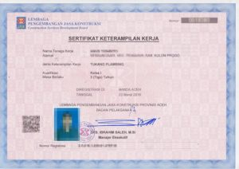
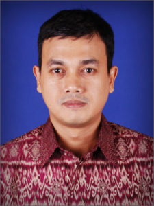

Daftar Bidang / Sub Bidang SKT

Bidang Arsitektur (Kode: TA)
Sub Bidang Arsitektur:
TA 003 Juru Gambar/Draftman – Arsitektur
TA 004 Tukang Pasang Bata/Dinding/Bricklayer (Tk. Bata)
TA 005 Tukang Pasang Batu/Tukang Bangunan Umum/Stone Masonry
TA 006 Tukang Plesteran/Plasterer/Solid Plaster
TA 007 Tukang Pasang Keramik ( Lantai dan Dinding )
TA 008 Tukang Pasang Lantai dan Tegel/Ubin/Marmer
TA 009 Tukang Kayu/Carpenter(termasuk kayu bangunan)
TA 011 Tukang Pasang Plafon / Ceiling Fixer / Ceiling Fixing )
TA 014 Tukang Cat Bangunan
TA 015 Tukang Taman / Landscape
TA 016 Pelaksana Lapangan Pekerjaan Plambing
TA 017 Supervisor Perawatan Gedung Bertingkat
TA 018 Tukang Pelitur Kayu
TA 019 Tukang Kusen Pintu dan Jendela Bertingkat
TA 020 Pelaksana Lapangan Pekerjaan Perumahan dan Gedung
TA 021 Pelaksana Lapangan Pekerjaan Finishing Bangunan Gedung Bertingkat Tinggi
TA 022 Pelaksana Bangunan Gedung/Pekerjaan Gedung
TA 023 Pelaksana Bangunan Perumahan/Permukiman
TA 024 Pengawas Bangunan Gedung
TA 025 Pengawas Bangunan Perumahan
TA 026 Pelaksana Penata Taman
TA 027 Juru Ukur Kuantitas Bangunan Gedung
TA 028 Pengawas Mutu Pelaksanaan Kontruksi Bangunan Gedung
TA 029 Penata Taman / Landscape
TA 030 Pelaksana Madya Perawatan Bangunan Gedung
TA 031 Pengawas Tukang Cat Bangunan
TA 032 Pembantu Pelaksana Pemasangan Plafon
TA 033 Teknisi Kaca
TA 034 Pemasang Dinding Partisi
Bidang Sipil (Kode:TS)
Sub Bidang Sipil:
TS 003 Juru Gambar/ Draftman – Sipil
TS 004 Juru Ukur/Teknisi Survey Pemetaan
TS 005 Teknisi/Asisten Laboratorium Jalan
TS 006 Teknisi / Asisten Laboratorium Beton
TS 007 Teknisi/Asisten Laboratorium Mekanika Tanah
TS 008 Teknisi Laboratorium Aspal
TS 009 Operator Alat Penyelidikan Tanah/Soil Investigation Operator
TS 010 Tukang Pekerjaan Pondasi/Foundation Work
TS 011 Tukang Pekerjaan Tanah/Earthmoving
TS 012 Tukang Besi Beton (Barbender/Bar Bending)
TS 013 Tukang Cor Beton (Concetor/Concrete Operation)
TS 014 Tukang Pasang Perancah/Formworker/Formwork
TS 015 Tukang Pasang Scafolding/Scaffolder/Scaffolding
TS 016 Tukang Pasang Pipa Gas / Gas Pipe Fitter
TS 017 Tukang Perkerasan Jalan/Paving
TS 018 Tukang Pasang Kontruksi Rig/Pilling Rigger/Rigger (belum ada SKKNI belum bisa cetak belakang)
TS 019 Tukang Boring/Boring and Driving (belum ada SKKNI belum bisa cetak belakang)
TS 020 Tukang Pekerjaan Baja
TS 021 Pekerja Aspal Jalan
TS 022 Mandor Produksi Campuran Aspal Panas
TS 023 Mandor Perkerasan Jalan
TS 024 Teknisi Pekerjaan Jalan dan Jembatan
TS 025 Juru Ukur Kuantitas Pekerjaan Jalan dan Jembatan
TS 026 Tukang Perancah Besi
TS 027 Tukang Kontruksi Baja dan Plat
TS 028 Pelaksana Lapangan Pekerjaan Jalan
TS 029 Pelaksana Lapangan Pekerjaan Jembatan
TS 030 Pelaksana Lapangan Pekerjaan Jaringan Irigasi
TS 031 Pelaksana Saluran Irigasi
TS 032 Pelaksana Bangunan Irigasi
TS 033 Pelaksana Bendungan
TS 034 Pelaksana Terowongan
TS 035 Teknisi Perhitungan Kuantitas Pekerjaan Sumber Daya Air
TS 036 Pengawas Bendungan
TS 037 Pengawas Bangunan Irigasi
TS 038 Pengawas Saluran Irigasi
TS 039 Pengawas Terowongan
TS 040 Pengawas Lapangan Pekerjaan Jalan
TS 041 Pengawas Lapangan Pekerjaan Jembatan
TS 042 Teknisi Pengerukan
TS 043 Teknisi Survey Teknik Sipil (belum ada SKKNI belum bisa cetak belakang)
TS 044 Pelaksana Pekerjaan Jembatan
TS 045 Pelaksana Pekerjaan Jalan
TS 046 Kepala Pengawas Pekerjaan Jalan dan Jembatan
TS 047 Juru Hitung Kuantitas
TS 048 Juru Ukur Pekerjaan Jalan / Jembatan
TS 049 Teknisi Penghitung Kuantitas Pekerjaan Jalan/Jembatan
TS 050 Steel Erector of Bridge
TS 051 Pelaksana Bangunan Gedung/Pekerjaan Gedung
TS 052 Pelaksana Lapangan Pekerjaan Gedung
TS 053 Tukang Kayu Bekisting
TS 054 Tukang Pasang Beton Pra Cetak
TS 055 Tukang Rangka Aluminium
TS 056 Mandor Pemasangan Rangka Atap Baja Ringan
TS 057 Mandor Pemasangan Rangka Baja Jembatan
TS 058 Pelaksana Lapangan Pekerjaan Pemasangan Jembatan Rangka Baja
TS 059 Juru Gambar Pekerjaan Jalan dan Jembatan
TS 060 Tukang Bekisting (Acuan) dan Perancah Bidang Sumber Daya Air
TS 061 Mandor Pekerjaan Perkerasan Aspal
TS 062 Mandor Tukang Pasang Beton Precast
TS 063 Asisten Teknisi Laboratorium Jalan (Campuran Beton Beraspal)
TS 064 Asisten Teknisi Laboratorium Beton
TS 065 Asisten Teknisi Laboratorium Mekanika Tanah
TS 066 Teknisi Geoteknik
Bidang Mekanikal (Kode: TM)
Sub Bidang Mekanikal:
TM 003 Juru Gambar/Draftman-Mekanikal
TM 004 Operator Buldozer
TM 005 Operator Motor Grader
TM 006 Operator Mesin Excavator
TM 007 Operator Tangga Intake Dam
TM 008 Operator Road Roller / Road Roller Paver Operator
TM 009 Operator Wheel Loader
TM 010 Operator Crawler Crane
TM 011 Operator Rough Terrain Crane
TM 012 Operator Truck Mounted Crane
TM 013 Operator Tower Crane
TM 014 Operator Wheel Crane
TM 015 Operator Backhoe
TM 016 Operator Mesin Pemancang Tiang/Pile Hammer Operator
TM 017 Operator Mobil Pengaduk Beton
TM 018 Operator Crawler Tractor Bulldozer
TM 019 Operator Dump Truck
TM 020 Operator Forklift
TM 021 Operator Specialized Equipment Plant (belum ada SKKNI belum bisa cetak belakang)
TM 022 Operator Mobil Elevating Work Platform (belum ada SKKNI belum bisa cetak belakang)
TM 023 Operator Concrete Pump Equipment
TM 024 Operator Slinging & Rigging Operator (belum ada SKKNI belum bisa cetak belakang)
TM 025 Operator Mesin Bor
TM 026 Operator Mesin Bubut
TM 027 Mekanik Alat-alat Berat
TM 028 Tukang Las / Welder / Gas dan Electric Welder
TM 029 Tukang Bubut/Mesin Perkakas (belum ada SKKNI belum bisa cetak belakang)
TM 030 Operator Mesin Pencampur Aspal
TM 031 Operator Aspal Paver / Operator Mesin Penggelar Aspal
TM 032 Operator Mesin Penyemprot Aspal
TM 033 Pelaksana Produksi Hotmix
TM 034 Pelaksana Pekerjaan Jalan/Sheep Foot Vibrating Compactor Operator
TM 035 Juru Las Oxytetylene
TM 036 Operator Mesin Gergaji Presisi (belum ada SKKNI belum bisa cetak belakang)
TM 037 Operator Mesin Derek
TM 038 Tukang Pasang Pipa
TM 039 Tukang Las Konstruksi Plat dan Pipa
TM 040 Tukang Las MIG Posisi Bawah Tangan (belum ada SKKNI belum bisa cetak belakang)
TM 041 Tukang Las TIG Posisi Bawah Tangan
TM 042 Operator Mesin Bubut Kayu
TM 043 Operator Pengeboran Minyak
TM 044 Pelaksana Lapangan Pekerjaan ME Bangunan Gedung Bertingkat Tinggi
TM 045 Pelaksana Lapangan Pekerjaan Setting Out Bangunan Gedung Bertingkat
TM 046 Operator Mesin Grader
TM 047 Operator Mesin Pemecah Batu
TM 048 Pelaksana Perawatan Instalasi Sistem Transportasi Vertikal Dalam Gedung
TM 049 Concrete Paver Operator ( Operator Mesin Penghampar Beton Semen )
TM 050 Operator Cold Milling Plant/Machine
TM 051 Tukang Las Listrik
TM 052 Mekanik Tower Crane
TM 053 Operator Batching Plant
TM 054 Mekanik Campuran Aspal Panas
TM 055 Mekanik Heating Ventilation dan Air Condition (HVAC)
TM 056 Operator Gondola Pada Bangunan Gedung
TM 057 Teknisi Fire Alarm
TM 058 Mekanik Kapal Keruk
TM 059 Mekanik Engine Alat Berat
Bidang Elektrikal (Kode: TE)
Sub Bidang Elektrikal:
TE 021 Tenisi Instalasi Penerangan dan Daya Phase Satu
TE 022 Tenisi Instalasi Penerangan dan Daya Phase Tiga
TE 024 Teknisi Instalasi Sistem Penangkal Petir
TE 055 Teknisi Instalasi Kontrol Terprogram ( Berbasis PLC )
TE 057 Teknisi Instalasi Otomasi Industri
TE 058 Teknisi Instalasi Motor Listrik, Kontrol dan Instrumen
TE 059 Teknisi Instalasi Alat Pengukur dan Pembatas ( APP )
TE 060 Teknisi Instalasi Jaringan Tegangan Rendah (JTR)
TE 061 Teknisi Instalasi Jaringan Tegangan Menengah (JTM)
Bidang tata Lingkungan (Kode: TT)
Sub Bidang Tata Lingkungan:
TT 001 Pelaksana Plambing/Pekerjaan Plambing
TT 002 Pengawas Plambing/Pekerjaan Pelambing
TT 003 Juru Gambar/Draftman-Tata Lingkungan
TT 004 Tukang Sanitary
TT 005 Tukang Pipa Air / Plumber
TT 006 Tukang Pipa Gas
TT 007 Tukang Pipa Bangunan
TT 008 Tukang Filter Pipa
TT 009 Juru Pengeboran Air Tanah
TT 011 Pelaksana Perpipaan Air Bersih
TT 012 Pelaksana Pembuatan Fasilitas Sampah dan Limbah
TT 013 Pelaksana Pengeboran Air Tanah
TT 014 Pengawas Perpipaan Air Bersih
TT 015 Pengawas Pengeboran Air Tanah
TT 016 Tukang Plambing
TT 017 Mandor Plambing
TT 018 Pelaksana Pengujian Kualitas Air Minum SPAM
TT 019 Pelaksana Pemasangan Pintu Air
TT 020 Pelaksana Lapangan Perpipaan Air Madya
TT 021 Pelaksana Lapangan TK II Pekerjaan Perpipaan
TT 022 Pelaksana Pemasangan Pipa Leachate (Lindo dan Gas di TPA)
TT 023 Pelaksana Pekerjaan Bangunan Limbah Permukiman
TT 024 Pelaksana Pekerjaan Lapisan Kedap Air Ditempat Pemproses TPA
TT 025 Teknisi Sondir
TT 026 Teknisi Geologi Teknik
Bidang Lain-lain (Kode: TL)
Sub Bidang Lain-lain:
TL 002 Estimator Biaya Jalan
TL 003 Quantity Surveyor
TL 005 Mandor Tukang Batu / Bata / Beton
TL 006 Mandor Tukang Kayu
TL 007 Mandor Batu Belah
TL 008 Mandor Tanah
TL 009 Mandor Besi / Pembesian / Penulangan Beton
Demikian informasi yang dapat kami sampaikan, saran dan kritik kami harapkan dari anda guna meningkatkan pelayan kami.
Semoga informasi yang kami berikan dapat bermanfaat.
Salam,

Nama Konsultan : Victor
Mobile : 082245000490 (Call/Whatsapp)
Email : abdi@sertifikasi-keahlian.com